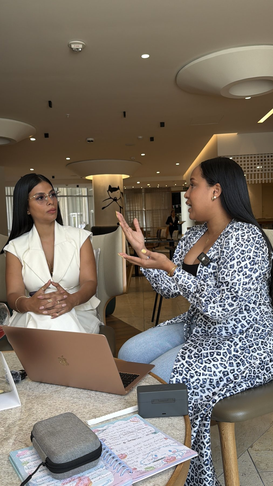
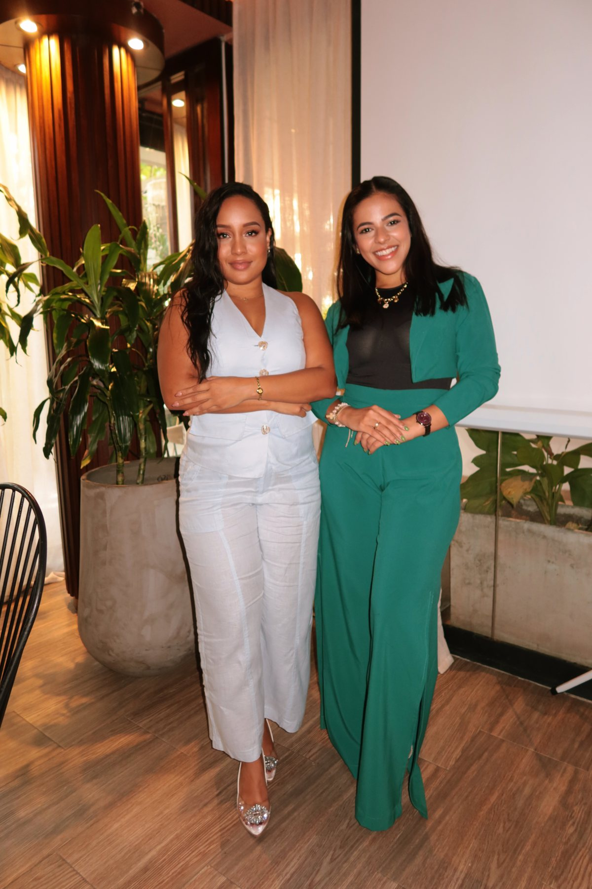
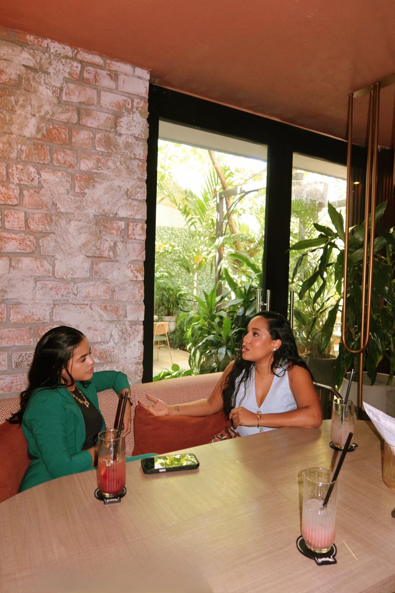
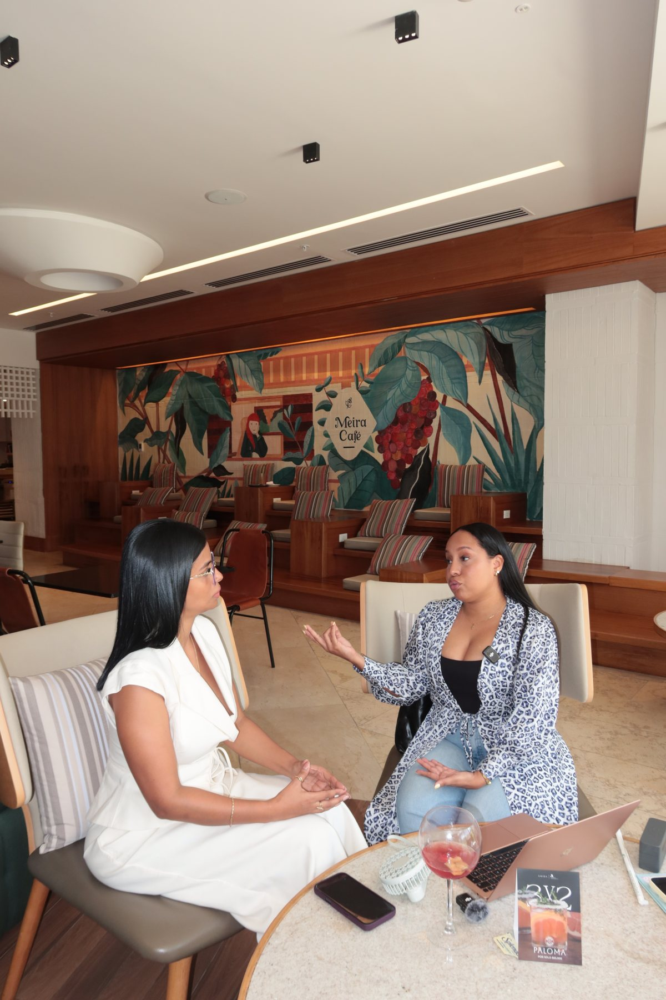
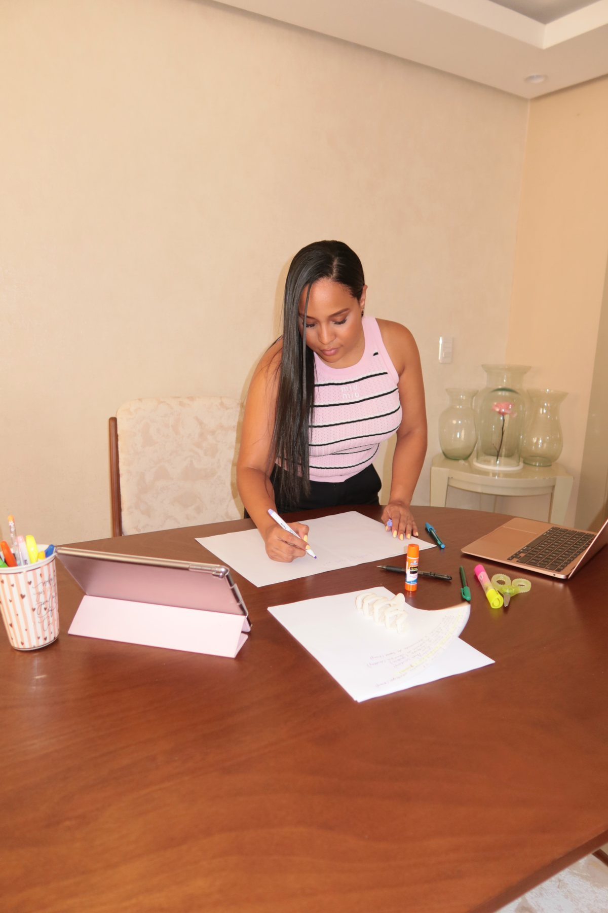

Experiencia Estratégica Privada · Barranquilla · Virtual
Recalibración
de Autoridad™
La experiencia privada donde organizamos tu estrategia, afinamos tu mensaje y construimos la percepción que necesita tu negocio para dejar de competir por atención y comenzar a ser elegido con mayor claridad.
No vienes a recibir más ideas.
Vienes a tomar decisiones, convertir tu experiencia en autoridad y salir con una dirección capaz de sostener la siguiente etapa de tu negocio.

La Percepción Actual
Tu negocio puede haber crecido antes que la percepción que existe sobre él.

Las empresas cambian cuando cambian las decisiones de quien las lidera.
Tu autoridad no se construye publicando más. Se construye comunicando con intención.

Puedes tener experiencia, clientes, resultados y un trabajo extraordinario.
Pero si tu comunicación todavía se siente improvisada, genérica o difícil de explicar, el mercado no alcanza a percibir todo lo que realmente existe detrás de tu trabajo.
También puedes estar comenzando y saber que no quieres construir tu autoridad a prueba y error.
En ambos casos, el problema no es la falta de capacidad.
Es la falta de una dirección que organice cómo quieres ser vista, recordada y elegida.
La autoridad no aparece cuando publicas más. Aparece cuando todo lo que comunicas comienza a sostener la misma percepción.

La Transformación
Saldrás con una versión mucho más clara, vendible y visible de lo que ya sabes hacer.
Durante esta experiencia vamos a convertir ideas dispersas, experiencia acumulada y decisiones aplazadas en una estrategia capaz de sostener tu autoridad.
Al terminar tendrás claridad sobre:
Qué negocio estás construyendo.
Cómo necesitas posicionarte.
Qué debe entender el mercado sobre ti.
Cómo expresar el valor de tu trabajo.
Qué comunicar durante los próximos meses.
Cómo presentar tu oferta con mayor seguridad.
Qué acciones deben convertirse en prioridad.
No saldrás con una lista de recomendaciones.
Saldrás con una dirección.
El Recorrido Estratégico
Cuatro movimientos, una sola dirección.
Reset Estratégico
Clarificamos tu visión, tus objetivos, tus prioridades y las decisiones financieras o comerciales que deben dirigir tu siguiente etapa.
Recalibración de Posicionamiento
Definimos la percepción, el mensaje, el diferencial y el lugar que quieres ocupar en la mente de tus clientes.
Story Machine
Construimos la estructura de comunicación que convertirá tu criterio, experiencia y resultados en contenido con intención.
Roadmap de Ejecución
Organizamos tus próximos pasos para que salgas sabiendo qué hacer, qué comunicar y qué dejar de improvisar.

Antes Del Encuentro
Esta experiencia comienza antes de sentarnos a trabajar.
Después de reservar recibirás un formulario estratégico para profundizar en tu negocio, tu oferta, tus metas, tu comunicación y los obstáculos que hoy están frenando tu crecimiento.
Tus respuestas permitirán preparar la sesión con anticipación para que no gastemos tiempo comenzando desde cero.
Llegaremos directamente a las decisiones que necesitan ser tomadas.
Tu Experiencia
La misma profundidad, en dos formatos distintos.
Barranquilla, Colombia
- Formulario estratégico previo.
- Sesión privada de 3 a 4 horas.
- Desarrollo de la estrategia.
- Construcción y grabación de tu pitch de venta.
- Fotografías de marca personal.
- Grabación de material para redes sociales.
- Workbook y materiales de trabajo.
- Roadmap personalizado.
- Bebida de bienvenida.
- Selección de entradas gourmet.
Una experiencia inmersiva diseñada para que no solo salgas con claridad, sino también con material visual y comercial listo para comenzar a comunicar tu nueva dirección.
Reservar experiencia presencialPrivado por Zoom
- Formulario estratégico previo.
- Sesión privada de 3 a 4 horas por Zoom.
- Desarrollo de la estrategia.
- Construcción de tu pitch de venta.
- Workbook y materiales de trabajo.
- Roadmap personalizado.
- Grabación completa de la sesión.
La misma profundidad estratégica, desde cualquier lugar, con una grabación que podrás consultar mientras implementas cada decisión.
Reservar experiencia virtualAntes De Entrar
La próxima mujer en entrar a esta sala no está buscando más información. Está lista para una decisión.
Puede que ya tengas un negocio funcionando y necesites que tu posicionamiento alcance el nivel de tus resultados.
Puede que estés comenzando y quieras construir tu autoridad correctamente desde el principio.
Puede que tengas muchas ideas, pero todavía no exista una narrativa capaz de organizarlas.
Puede que sepas vender lo que haces, pero no hayas encontrado una forma clara, sólida y memorable de explicarlo.
Recalibración de Autoridad fue creada para la mujer que no quiere seguir improvisando la percepción de su negocio.
Quiere diseñarla.
Recalibración de Autoridad™
No necesitas convertirte en alguien diferente.
Necesitas que el mercado alcance a ver con claridad a la mujer, la experiencia y el criterio que ya existen.
Recalibración de Autoridad es el espacio privado donde todo comienza a tomar forma.
Tu estrategia.
Tu mensaje.
Tu pitch.
Tu contenido.
Tu siguiente etapa.
Cuando tu autoridad se vuelve clara, vender deja de sentirse como demostrar y comienza a sentirse como ser reconocida.